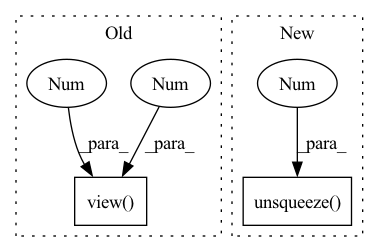

Pattern ID :3125
Before Change
elif derivative == 2:
dr = self.extract_tri_up(self.edist(
pos, derivative=1)).view( nbatch, 3 , -1 )
d2r = self.extract_tri_up(self.edist(
pos, derivative=2)).view(nbatch, 3, -1)
return self._jastrow_second_derivative(r, dr, d2r, jast)After Change
dr = self.edist(pos, derivative=1)
d2r = self.edist(pos, derivative=2).view(nbatch, 3, -1)
return(jast.prod(-1).prod(-1).unsqueeze(-1 ) ,
self._jastrow_derivative(r, dr, jast, jacobian),
self._jastrow_second_derivative(r, dr, d2r, jast))
In pattern: SUPERPATTERN
Frequency: 3
Non-data size: 2
Instances Fragment ID: 10175551
Project Name: nlesc-jcer/qmctorch
Commit Name: 2dd5eec426a6613b9474adfacc7c51f0e461f236
Time: 2021-02-16
Author: nicolas.gm.renaud@gmail.com
File Name: qmctorch/wavefunction/jastrows/electron_nuclei_jastrow_base.py
M Class Name: ElectronNucleiJastrowFactorBase
N Class Name: ElectronNucleiJastrowFactorBase
M Method Name: forward(4)
N Method Name: forward(4)
M Parent Class: nn.Module
N Parent Class: nn.Module
M File Name: qmctorch/wavefunction/jastrows/electron_nuclei_jastrow_base.py
N File Name: qmctorch/wavefunction/jastrows/electron_nuclei_jastrow_base.py
M Start Line: 61
M End Line: 90
N Start Line: 71
N End Line: 86
Before Change
def forward(self, input):
output = self.preprocess(input)
output = output.view( output.shape[0], output.shape[1], 1 , 1 )
output = self.preprocess_1(output)
output = output.view(-1, 4 * self.dim, 4, 4)
output = self.block1(output)
output = self.block2(output)After Change
def forward(self, x: torch.Tensor):
x = self.preprocess(x)
x = x.unsqueeze(-1).unsqueeze(-1 )
x = self.preprocess_1(x)
x = x.view(-1, 4 * self.dim, 4, 4)
x = self.block1(x)
x = self.block2(x) Fragment ID: 10175550
Project Name: ain-soph/trojanzoo
Commit Name: ea3dc7e60e1c454ab193464200273ef48f03888f
Time: 2020-08-04
Author: ain-soph@live.com
File Name: trojanzoo/attack/backdoor/clean_label.py
M Class Name: Generator
N Class Name: Generator
M Method Name: forward(2)
N Method Name: forward(2)
M Parent Class: nn.Module
N Parent Class: nn.Module
M File Name: trojanzoo/attack/backdoor/clean_label.py
N File Name: trojanzoo/attack/backdoor/clean_label.py
M Start Line: 230
M End Line: 232
N Start Line: 143
N End Line: 145
Before Change
self.out = nn.Linear(self.hidden_size, self.output_size)
def forward(self, input, hidden, encoder_outputs):
embedded = self.embedding(input).view(1 , 1 , -1)
embedded = self.dropout(embedded)
attn_weights = F.softmax(
self.attn(torch.cat((embedded[0], hidden[0]), 1)), dim=1)After Change
embedded = self.dropout(self.embedding(_input).view(1, 1, -1))
attn_weights = F.softmax(self.attn(torch.cat((embedded[0], hidden[0]), 1)), dim=1)
attn_applied = torch.bmm(attn_weights.unsqueeze(0), encoder_outputs.unsqueeze(0))
output = F.relu(self.attn_combine(torch.cat((embedded[0], attn_applied[0]), 1)).unsqueeze(0 ) )
output, hidden = self.gru(output, hidden)
output = F.log_softmax(self.out(output[0]), dim=1)
return output, hidden, attn_weights Fragment ID: 10175569
Project Name: asahi417/lm-question-generation
Commit Name: 807e2131b9e761d29682f6ddb83c19ca665d4f44
Time: 2022-12-25
Author: asahi1992ushio@gmail.com
File Name: misc/qag_model/lstm_model/model_training.py
M Class Name: AttnDecoderRNN
N Class Name: AttnDecoderRNN
M Method Name: forward(4)
N Method Name: forward(4)
M Parent Class: nn.Module
N Parent Class: nn.Module
M File Name: misc/qag_model/lstm_model/model_training.py
N File Name: misc/qag_model/lstm_model/model_training.py
M Start Line: 85
M End Line: 96
N Start Line: 72
N End Line: 75